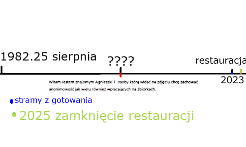

STRONA GŁÓWNA
Makajler(Igor Grabowski, 45 lat) to osoba z licznymi tytułami naukowymi.
Mieszka on w drobinie.
Ważną częścią jego życia było opiekowanie się końmi gdzie poznał swoją żonę Agnieszke.
Makajler był świadkiem UFO drobińskiego
oraz wielu aktywności rządowych np. podkładanie mu muzyczek do domu i ograniczanie jego zdolności przez Microsoft.
Osoba ta twierdzi, że ma niezwykłą umiejętność władania nad AI(czyt. AI, nie ej aj).
TIME LINE
